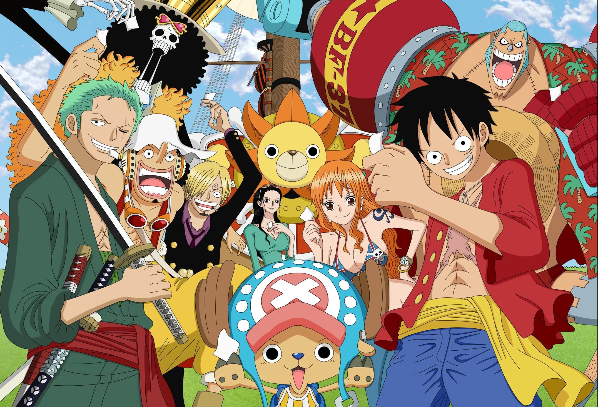

PLUNDERER
Synopsis:
Alcia is a world governed by "Count": numbers engraved on a person's body,
representing any number related to their life. These Counts determine
a person's social status and power in Alcia. If a Count reaches zero, the
person is sent to the Abyss, a place rumored to be worse than death.
Hina, a traveler whose Count is based on the distance she traveled, witnessed
her mother get dragged down into the Abyss.
Determined to fulfill her mother's last wishes, she sets off on a journey in
search of the legendary Aces—heroes of the war that happened three hundred years
ago, bearing a white star next to their Count While wandering around, Hina
encounters Licht Bach,a mysterious masked man with negative Count, and Nana, the
owner of a tavern. In the midst of having a good time Hina is tricked into a battle
with a military soldier. However, despite his negative count,Licht rescues Hina and
reveals that he has another count, one with a white star, one of a legendary Ace.
Plunderer follows the journey of Hina and other inhabitants of Alcia as they discover the truth about
their world, the Abyss, and the legendary Aces.
Latest Episode:Episode 14 :"7 Minutes 12 Seconds"
ONE PIECE
Synopsis:
Gol D. Roger was known as the "Pirate King," the strongest and most infamous being
to have sailed the Grand Line. The capture and execution of Roger by the World Government
brought a change throughout
the world. His last words before his death revealed the existence of the greatest treasure in the world, One Piece.
It was this evelation that brought about the Grand Age of Pirates, men who dreamed of finding One Piece—which promises
an unlimited amount of riches and fame—and quite possibly the pinnacle of glory and the title of the Pirate King.
Monkey D. Luffy, a 17-year-old boy who defies your standard definition of a pirate. Rather than the popular persona of a wicked,
hardened, toothless pirate ransacking villages for fun,Luffy’s reason for being a pirate is one of pure wonder: the thought of
an exciting adventurethat l eads him to intriguing people and ultimately, the promised treasure. Following in the footsteps of his
childhood hero, Luffy and his crew travel across the Grand Line, experiencing crazy adventures, unveiling dark mysteries and battling
strong enemies, all in order to reach the most coveted of all fortunes—One Piece.
Latest Episode: Episode 930 :"A Lead Performer! Queen the Plague Emerges!"
BLACK CLOVER

Synopsis:
Asta and Yuno were abandoned at the same church on the same day. Raised together as children,
they came to know of the "Wizard King"—a title given to the strongest mage in the kingdom—and promised that they
would compete against each other for the position of the next Wizard King. However, as they grew up, the stark difference
between them became evident. While Yuno is able to wield magic with amazing power and control, Asta cannot use magic at
all and desperately tries to awaken his powers by training physically.
When they reach the age of 15, Yuno is bestowed a
spectacular Grimoire with a four-leaf clover, while Asta receives nothing. However, soon after, Yuno is attacked by a
person named Lebuty, whose main purpose is to obtain Yuno's Grimoire. Asta tries to fight Lebuty, but he is outmatched.
Though without hope and on the brink of defeat, he finds the strength to continue when he hears Yuno's voice. Unleashing
his inner emotions in a rage, Asta receives a five-leaf clover Grimoire, a "Black Clover" giving him enough power to defeat
Lebuty. A few days later, the two friends head out into the world, both seeking the same goal—to become the Wizard King!